04. Java Básico [40 Horas]
-
Java é uma linguagem de programação, orientada a objetos, desenvolvida na década de 90 por uma equipe de programadores chefiada por James Gosling, na empresa Sun Microsystems.
-
Este curso é indicado para qualquer pessoa que já possua bons conhecimentos de algoritmos e lógica de programação.
-
Caso você já domine a construção de algoritmos e a lógica de programação, o professor Gustavo Guanabara vai mostrar a história, introdução e explicação do funcionamento da linguagem, assim como suas sintaxes e estruturas de maneira fácil e descontraída.
Java Básico - Índice
| Aula 01 | Aula 02 | Aula 03 | Aula 04 | Aula 05 | Aula 06 | Aula 07 | Aula 08 | Aula 09 | Aula 10 | Aula 11 | Aula 12 | Aula 13 | Aula 14 | Aula 15 |
Conteúdo do Módulo 🔖
- Aula 01 – História do Java ✅
- Exercícios de Java #01
- Aula 02 – Como Funciona o Java ✅
- Exercícios de Java #02
- Aula 3 – Instalando o JDK no seu Computador ✅
- Exercícios de Java #03
- Aula 4 – Primeiro Programa em Java ✅
- Exercícios de Java #04
- Aula 5 – Introdução ao Swing e JavaFX ✅
- Exercícios de Java #05
- Aula 6 – Tipos Primitivos e Manipulação de Dados ✅
- Exercícios de Java #06
- Aula 7 – Operadores Aritméticos e Classe Math
- Exercícios de Java #07
- Aula 8 – Operadores Lógicos e Relacionais
- Exercícios de Java #08
- Aula 9 – Estruturas Condicionais (Parte 1)
- Exercícios de Java #09
- Aula 10 – Estruturas Condicionais (Parte 2)
- Exercícios de Java #10
- Aula 11 – Estruturas de Repetição (Parte 1)
- Exercícios de Java #11
- Aula 12 – Estruturas de Repetição (Parte 2)
- Exercício de Java #12
- Aula 13 – Estruturas de Repetição (Parte 3)
- Exercícios de Java #13
- Aula 14 – Vetores
- Exercícios de Java #14
- Aula 15 – Métodos
- Exercícios de Java #15
Aulas 🔖
01. Aula 1 – História do Java ✅
A História da Linguagem Java se inicia em 1990, quando a Sun Microsystems criou uma equipe chamada Green Team, liderada por James Gosling.
Até o momento, as Linguagens de Programação como Pascal e C, precisavam de compiladores específicos para cada plataforma. Sem isso, os programas só seriam executáveis para um único sistema.
Foi aí que o grupo criou o projeto GreenTalk, que virou a Linguagem Oak, capaz de ligar dispositivos diferentes e fazer com que eles pudessem se comunicar.
O Star Seven (*7) surgiu em 1991 e era um aparelho multimídia capaz de controlar vários dispositivos da sua casa. Infelizmente o projeto não foi aceito na época e tudo foi engavetado em 1992.
Em 1994, com o advento da World Wide Web (www) e da Linguagem HTML, o projeto da Sun foi reestabelecido com o objetivo de criar um Navegador Web capaz de rodar aplicativos em Oak.
O nome "Oak" não poderia ser utilizado por questões de direitos relacionados. A linguagem foi rebatizada em homenagem a uma gíria relativa a "Café Quente": Java Coffee.
Surgem então o navegador HotJava e a linguagem Java, que ficou famosa por conta de matérias veiculadas pela imprensa da época.
A partir daí, vários projetos surgiram para usar Java em todo lugar. O Java Ring e Sondas Espaciais da NASA são exemplos disso.
Em 2006 a Linguagem Java se tornou Open Source, que tem seu código livre para consultas, pesquisas e personalizações. Java usa a licença GPL (General Public Licence)
Em 2009 a Sun Microsystems foi vendida para a Oracle por US$7,4 bilhões.
Atualmente, a Linguagem Java pode ser encontrada em chips de cartão de crédito, discos de blu-ray, vídeo games (PS4 roda Java), leitores de e-books (Kindle roda Java), smartphones (Android roda Java), TV digital (o padrão Ginga é feito em Java), relógios inteligentes (Moto 360 roda Java) e até mesmo no programa para a Declaração de Imposto de Renda.
- Exercícios de Java #01


 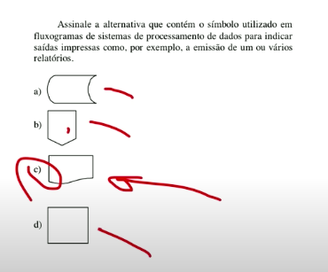
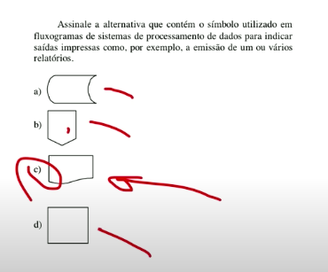

02. Aula 02 – Como Funciona o Java
Como funciona o Java? Você sabe o que é JVM, JRE, JDK, JavaC, bytecode? É exatamente isso que você vai aprender durante essa aula.
O JavaC (Java Compiler) vai transformar o Código Fonte Java em Bytecode, um código específico que vai executar em uma Máquina Virtual Java (Java Virtual Machine - JVM).
Uma JVM é uma solução de software capaz de executar bytecode em qualquer máquina, independente da plataforma que o Código Fonte foi compilado. Java é multiplataforma sem a necessidade de recompilação.
A JVM é composta por várias partes internas, como por exemplo Loader, Verificador, Interpretador, Gerenciador de Memória e Compilador JIT (Just in Time).
Atualmente existem JVMs em várias plataformas, como Computadores Pessoais (Windows, Linux, MacOS), dispositivos móveis (Android) e até mesmo os modernos wearables (relógios inteligentes, óculos inteligentes).
O princípio de funcionamento desse mecanismo explicado acima é conhecido pela sigla WORA (Write Once Run Anywhere) que significa “Escreva uma vez, execute em qualquer lugar”.
JRE (Java Runtime Environment) é um conjunto de software que forma um ambiente para a execução de bytecodes feitos em Java. Ela é composta da JVM e bibliotecas adicionais.
JDK (Java Development Kit) é um conjunto de programas que todo programador Java deve ter.
Ele é um kit de desenvolvimento Java composto pela JRE (item acima), o JavaLang, o JavaTools (JavaC, Debugger, APIs).
Além disso, você ainda pode adicionar uma IDE para facilitar o desenvolvimento Java.
As IDEs mais conhecidas são o Eclipse, o IntelliJ e o NetBeans.
O Curso em Vídeo de Java vai adotar o NetBeans para o aprendizado da Linguagem Java.
Na próxima aula, veremos as versões do Java que usaremos (SE/EE/ME), em qual lugar vamos fazer o download do JDK para o Java SE e veremos as instruções para a instalação da plataforma Java que será utilizada durante todo o curso.
- Slides


- Exercícios de Java #02
 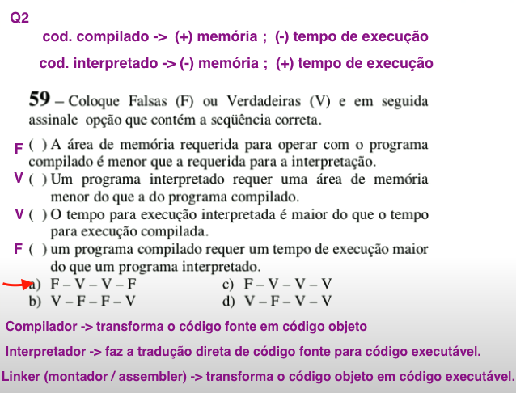
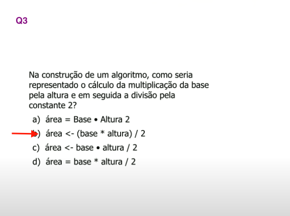
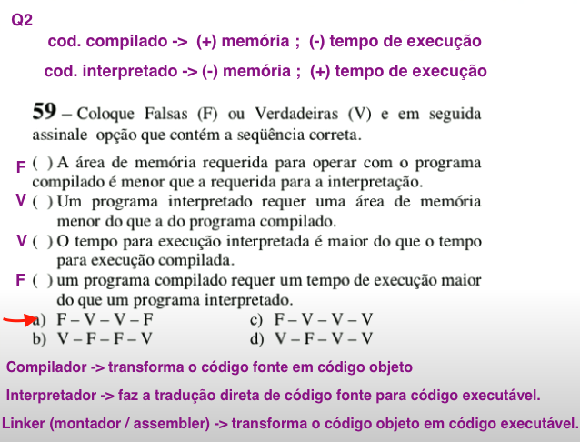
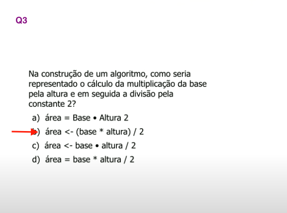


Conteúdo para o Curso de Java
Download do JDK Java SE + NetBeans
Para aprender JAVA você precisa instalar um Kit de Desenvolvimento Java (JDK) e uma IDE. Para isso, deve instalar a versão à sua escolha.
Existem várias opções no site da Oracle, indicamos aqui algumas versões encontradas no site oficial:
Vídeo - Como instalar o Java JDK
Google Drive - Download dos SLIDES usados em Aula
03. Aula 3 – Instalando o JDK no seu Computador
Veja o passo-a-passo para Instalar o Java Development Kit (JDK) do Java SE 8.
Para instalar o pacote do JDK Java, você deve baixar os arquivos diretamente do site da Oracle.
Edições do Java
- Java SE (Standard Edition) é usado para o desenvolvimento da maioria das aplicações que você vai criar em Java.
- Java EE (Enterprise Edition) usado para aplicações maiores, com acesso a servidores, grandes bases de dados, etc.
- Java ME (Micro Edition) é usado para o desenvolvimento de aplicativos voltados para dispositivos móveis.
Qual é a melhor IDE para programar em Java?
Nós utilizaremos o NetBeans durante o curso.
Uma IDE (Integrated Development Environment) é um Ambiente de Desenvolvimento Integrado que permite utilizar técnicas de RAD (Rapid Application Development).
Algumas vantagens são:
- É um editor completo
- Possui integração entre compilador, linker e debugger
- Gerador Automático de Código
- Possui um ambiente de teste
- Distribuição simplificada
- Exercícios de Java #03


04. Aula 4 – Primeiro Programa em Java
- Slides


- Exercícios de Java #04
 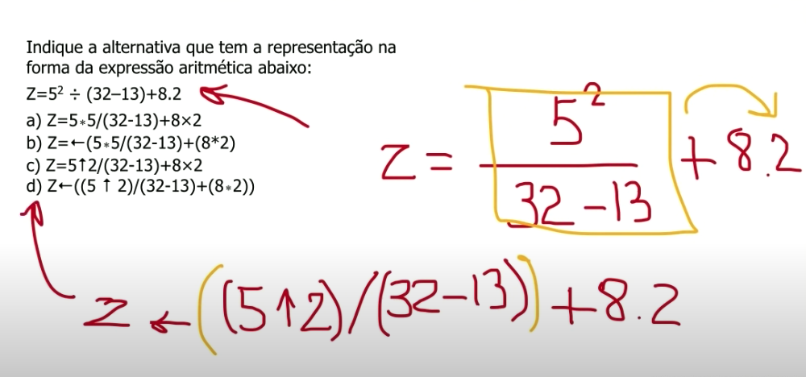
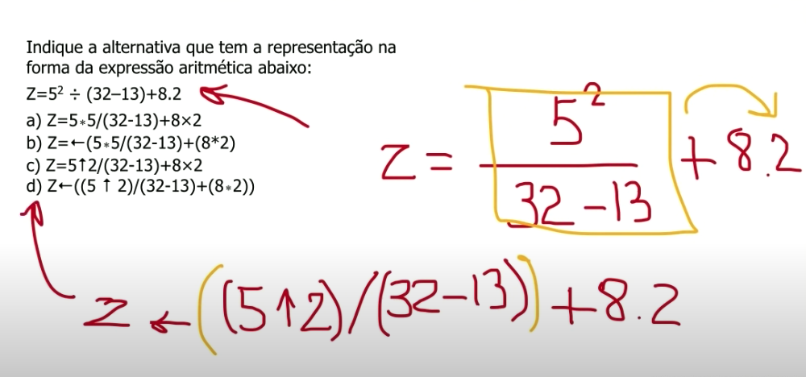
Hello, World
Como criar um tradicional “Olá, Mundo!” (Hello World) em Java.
Estou utilizando o IntelliJ IDEA da JetBrains.
YouTube - Creating your first Java application with IntelliJ IDEA
Help - Create your first Java application
Code completion (IntelliSense):
- Ao digital
psvmapresentapublic static void main
public static void main(String[] args) { }
- Ao digital
soutapresentaSystem.out.println
System.out.println("");
Projects
- Programa
class HelloWorld
package com.example.helloworld; public class HelloWorld { // digitar 'psvm' <TAB> public static void main(String[] args) { // digitar 'sout' <TAB> System.out.println("Hello, World!"); } }
- Programa
class HoraDoSistema
import java.util.Date; public class HoraDoSistema { public static void main(String[] args) { Date data = new Date(); System.out.println("A hora do sistema é"); System.out.println(data); } }
- Programa
class IdiomaSistema
package idiomasistema; import java.util.Locale; public class IdiomaSistema { public static void main(String[] args) { Locale currentLocale = Locale.getDefault(); System.out.println(currentLocale.getDisplayLanguage()); // "English" System.out.println(currentLocale.getDisplayCountry()); // "Brazil" System.out.println(currentLocale.getLanguage()); // "en" System.out.println(currentLocale.getCountry()); // "BR" System.out.println(System.getProperty("user.language")); // "en" System.out.println(System.getProperty("user.country")); // "BR" /** * Locale getLanguage() Method in Java with Examples */ // Create a new locale Locale brazil_locale = new Locale("pt","BR"); // Displaying brazil_locale locale System.out.println("\n Brazil Locale: " + brazil_locale); // Brazil Locale: pt_BR // Displaying the language_code of this locale System.out.println("\n Language: " + brazil_locale.getLanguage()); // Language: pt } }
- Programa
class ResolucaoTela
package resolucaotela; import java.awt.*; public class ResolucaoTela { public static void main(String[] args) { Toolkit tk = Toolkit.getDefaultToolkit(); System.out.println("Screen resolution = " + tk.getScreenResolution()); // Screen resolution = 96 Dimension d = tk.getScreenSize(); System.out.println("Screen width = " + d.width); // Screen width = 1920 System.out.println("Screen height = " + d.height); // Screen height = 1080 } }
05. Aula 5 – Introdução ao Swing e JavaFX
Por ser uma linguagem multiplataforma, o Java tem que utilizar pacotes adicionais para que os seus arquivos não sejam sobrecarregados sem necessidade.
Para isso, é necessário utilizar a instrução "import" para carregar bibliotecas de pacotes adicionais.
Por padrão, apenas o pacote java.lang é carregado automaticamente.
Porém, caso você precise carregar bibliotecas adicionais, utilize a importação desses pacotes.
Biblioteca Swing
O Swing é uma evolução do antigo AWT (Abstract Windows Toolkit) que permite criar interfaces gráficas atraentes para qualquer sistema operacional baseado em janelas.
Plataforma JavaFX
Com o objetivo de substituir o Swing, o JavaFX cria interfaces para qualquer tipos de dispositivos, como ambientes de Janela, celulares e navegadores. Para a próxima versão, já está previsto o suporte para videogames, blu-rays e smart TVs.
Nessa aula, você vai aprender como criar uma aplicação simples utilizando Swing e JavaFX com XML. Não se esqueça de praticar bastante!
Informações gerais sobre o JavaFX
O JavaFX expande o poder do Java, permitindo que os desenvolvedores usem qualquer biblioteca Java em aplicações JavaFX. Dessa forma, os desenvolvedores podem expandir seus recursos no Java e aproveitar a tecnologia de apresentação que o JavaFX fornece para criar experiências visuais envolventes. Como usuário, você será capaz de executar as aplicações JavaFX em um browser ou arrastá-las e soltá-las na área de trabalho.
Destaques do JavaFX:
Permite que os desenvolvedores integrem gráficos de vetor, recursos Web de animação, áudio e vídeo em uma aplicação rica, interativa e imersiva;
Estende a tecnologia Java permitindo o uso de qualquer biblioteca Java em uma aplicação JavaFX;
Permite um fluxo de trabalho eficiente de designer para desenvolvedor, no qual os designers podem trabalhar com suas ferramentas preferidas, em colaboração com desenvolvedores.
Fonte: https://www.java.com/pt-BR/download/help/javafx.html
- Swing UI Design -> GUI Design
class HelloDemo
import javax.swing.*; import java.awt.event.ActionEvent; import java.awt.event.ActionListener; public class HelloDemo extends JFrame { private JPanel panelMain; private JTextField txtName; private JButton btnClick; private JTextField txtMessage; public HelloDemo() { btnClick.addActionListener(new ActionListener() { @Override // @SobrePor public void actionPerformed(ActionEvent e) { JOptionPane.showMessageDialog(btnClick, txtName.getText()+ ", Hello!"); txtMessage.setText(txtName.getText()); } }); } public static void main(String[] args) { HelloDemo h = new HelloDemo(); h.setContentPane(h.panelMain); h.setTitle("Hello"); h.setSize(300,300); h.setVisible(true); h.setDefaultCloseOperation(JFrame.EXIT_ON_CLOSE); } }
Program Hello (Swing UI Design -> GUI Design)

- Program Hello JavaFX
hello-view.fxml
<?xml version="1.0" encoding="UTF-8"?> <?import javafx.geometry.Insets?> <?import javafx.scene.control.Label?> <?import javafx.scene.layout.VBox?> <?import javafx.scene.control.Button?> <VBox alignment="CENTER" spacing="20.0" xmlns:fx="http://javafx.com/fxml" fx:controller="com.example.olamundojavafx.HelloController"> <padding> <Insets bottom="20.0" left="20.0" right="20.0" top="20.0"/> </padding> <Label fx:id="welcomeText"/> <Button text="Click Me!" onAction="#onHelloButtonClick"/> </VBox>
HelloController.java
package com.example.olamundojavafx; import javafx.fxml.FXML; import javafx.scene.control.Label; public class HelloController { @FXML private Label welcomeText; @FXML protected void onHelloButtonClick() { welcomeText.setText("Welcome to JavaFX Application!"); } }
HelloApplication.java
package com.example.olamundojavafx; import javafx.application.Application; import javafx.fxml.FXMLLoader; import javafx.scene.Scene; import javafx.stage.Stage; import java.io.IOException; public class HelloApplication extends Application { @Override public void start(Stage stage) throws IOException { FXMLLoader fxmlLoader = new FXMLLoader(HelloApplication.class.getResource("hello-view.fxml")); Scene scene = new Scene(fxmlLoader.load(), 320, 240); stage.setTitle("Hello!"); stage.setScene(scene); stage.show(); } public static void main(String[] args) { launch(); } }
Program hello (JavaFx)

- Exercícios de Java #05
 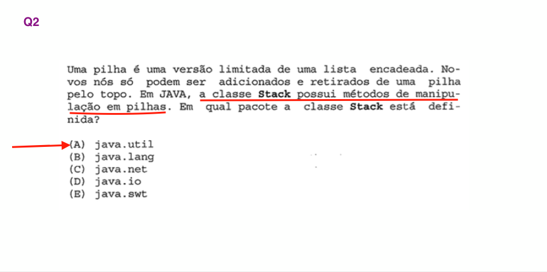
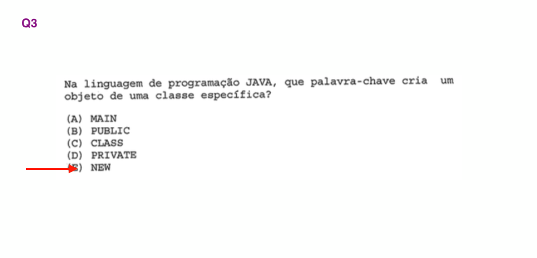
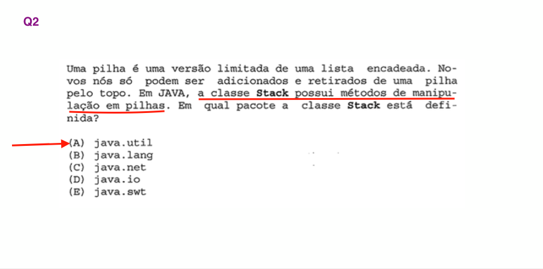
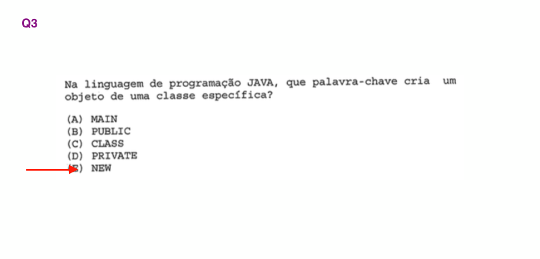
06. Aula 6 – Tipos Primitivos e Manipulação de Dados
Aprenda durante a aula a utilizar tipos primitivos, typecast ou classes invólucro para declarar variáveis/objetos para o seu programa.
Tipos Primitivos do Java
O Java tem os tipos primitivos:
- Lógico: boolean
- Literal: char
- Inteiro: byte, short, int, long
- Real: float, double
Além disso existem as classes Wrapper para os tipos: Boolean, Character, String, Byte, Short, Integer, Long, Float e Double.
Aprenda durante a aula a utilizar tipos primitivos, typecast ou classes invólucro para declarar variáveis/objetos para o seu programa.
Comentários em Java
Você pode utilizar comentários em Java utilizando os símbolos de
// para comentários de uma linha
e
/* */ para múltiplas linhas.
Além disso você vai aprender os comandos de saída: println, printf e String.format.
Aprenda também a utilizar a classe Scanner para ler dados via teclado usando os métodos nextInt, nextLine e nextFloat.
Por fim, aprenda a realizar conversões de dados usando as classes invólucro e seus métodos de parsing como parseInt, parseFloat e toString.
- Slides
 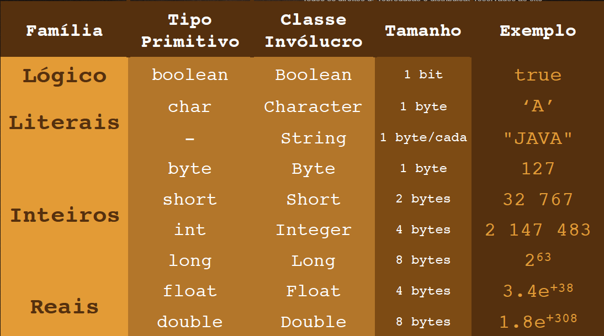
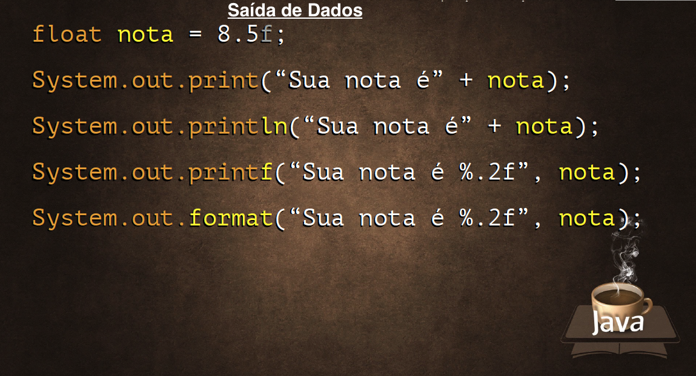
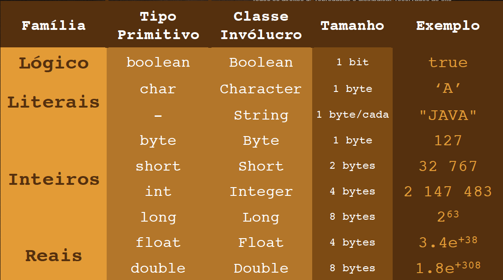
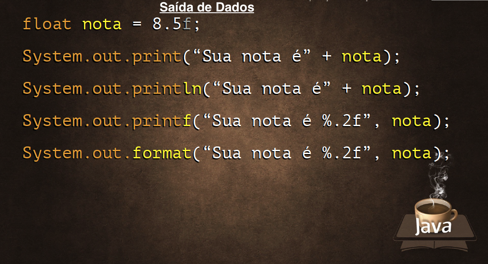

- Saída de dados:
println, printf e String.format
class TiposPrimitivosSaidaDados
package tiposprimitivos; /** * #author: Eduardo Rodrigues */ public class TiposPrimitivosSaidaDados { public static void main(String[] args) { // TODO code application logic here float nota = 8.5F; String nome = "Eduardo"; System.out.print("A nota é " + nota); // A nota é 8.5 System.out.print("\n"); // pula linha System.out.println("A nota é " + nota); // A nota é 8.5 System.out.printf("A sua nota é %.2f", nota); // A sua nota é 8.50 System.out.printf("\n A nota de %s é %.4f", nome, nota); // A nota de Eduardo é 8.5000 System.out.format("\n A nota de %s é %.1f", nome, nota); // A nota de Eduardo é 8.5 } }
- Entrada de dados: métodos
nextInt, nextLine e nextFloat
class TiposPrimitivosEntradaDados
import java.util.Scanner; public class TiposPrimitivosEntradaDados { public static void main(String[] args) { Scanner teclado = new Scanner(System.in); System.out.print("Digite o seu nome: "); // Eduardo String nome = teclado.nextLine(); System.out.print("Digite a sua nota: "); // 8.55 float nota = teclado.nextFloat(); System.out.format("A nota de %s é %.1f \n", nome, nota); // A nota de Eduardo é 8.6 } }
- Conversões de dados: métodos
parseInt, parseFloat e toString
class TesteTipos (toString)
public class TesteTipos { public static void main(String[] args) { int idade = 30; String valor = Integer.toString(idade); System.out.println(valor); // "30" [String] /* * Verificar o tipo de uma variável em Java: * Utilize getClass().getSimpleName() */ System.out.println(valor.getClass().getSimpleName()); // String } }
class TesteTipos (parseInt)
public class TesteTipos { public static void main(String[] args) { String valor = "30"; int idade = Integer.parseInt(valor); System.out.println(idade); // 30 [int] System.out.println(((Object)idade).getClass().getSimpleName()); // Integer } }
class TesteTipos (parseFloat)
public class TesteTipos { public static void main(String[] args) { String valor = "30.5"; float idade = Float.parseFloat(valor); System.out.println(idade); // 30.5 [float] System.out.println(((Object)idade).getClass().getSimpleName()); // Float } }
- Programa que realiza a soma de dois números
class TelaSoma
import javax.swing.*; import java.awt.event.ActionEvent; import java.awt.event.ActionListener; public class TelaSoma extends JDialog { private JPanel contentPane; private JTextField txtN1; private JTextField txtN2; private JButton btnSoma; private JLabel lblResultado; private JButton buttonOK; public TelaSoma() { setContentPane(contentPane); setModal(true); getRootPane().setDefaultButton(buttonOK); btnSoma.addActionListener(new ActionListener() { @Override public void actionPerformed(ActionEvent e) { int n1 = Integer.parseInt(txtN1.getText()); int n2 = Integer.parseInt(txtN2.getText()); int s = n1 + n2; lblResultado.setText(Integer.toString(s)); } }); } public static void main(String[] args) { TelaSoma dialog = new TelaSoma(); dialog.pack(); dialog.setVisible(true); System.exit(0); } }

Program TelaSoma
- Programa que calcula a idade
import javax.swing.*; import java.awt.event.ActionEvent; import java.awt.event.ActionListener; import java.util.Calendar; public class TelaSoma extends JDialog { private JPanel contentPane; private JButton buttonOK; private JButton buttonCancel; private JSpinner txtAN; private JButton btnCalc; private JLabel lblIdade; private JLabel lblAno; public TelaSoma() { setContentPane(contentPane); setModal(true); getRootPane().setDefaultButton(buttonOK); btnCalc.addActionListener(new ActionListener() { @Override public void actionPerformed(ActionEvent e) { int an = Integer.parseInt(txtAN.getValue().toString()); Calendar cal = Calendar.getInstance(); int ano = cal.get(Calendar.YEAR); lblAno.setText(Integer.toString(ano)); int id = ano - an; lblIdade.setText(Integer.toString(id)); } }); buttonCancel.addActionListener(new ActionListener() { @Override public void actionPerformed(ActionEvent e) { lblIdade.setText(""); txtAN.setValue(2000); } }); } public static void main(String[] args) { TelaSoma dialog = new TelaSoma(); dialog.pack(); dialog.setVisible(true); System.exit(0); } }
Program Idade

- Exercícios de Java #06


 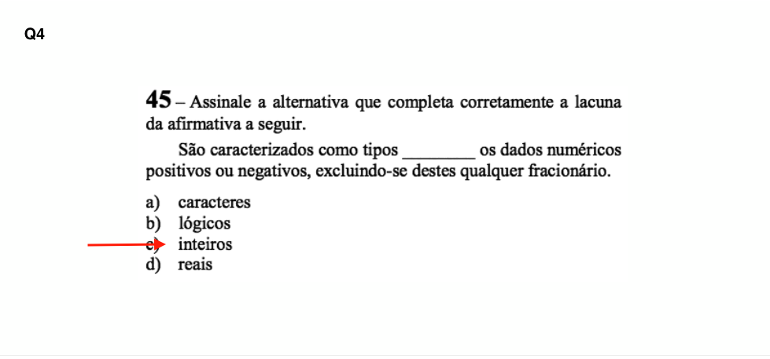
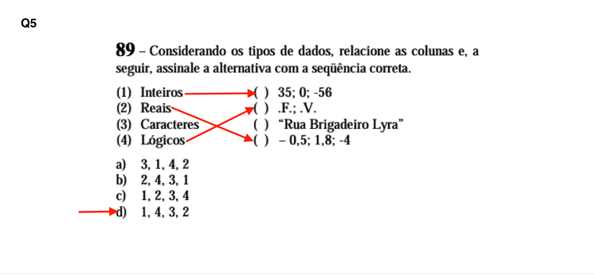
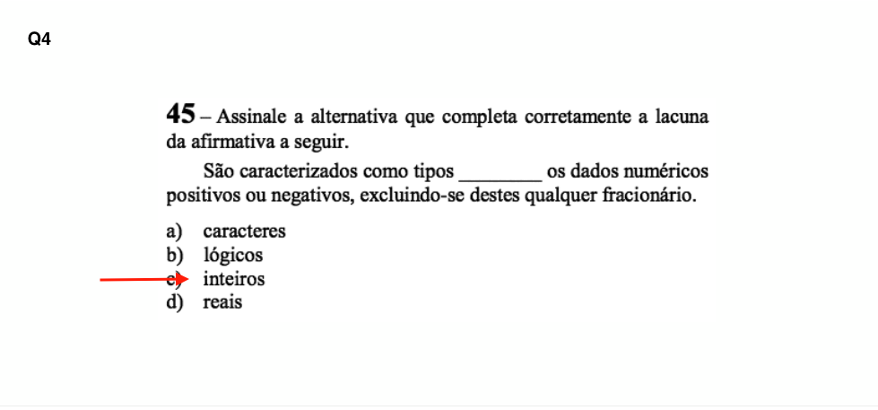
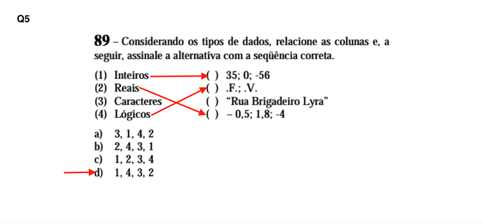
07. Aula 7 – Operadores Aritméticos e Classe Math
class OperadoresAritmeticos
public class OperadoresAritmeticos { /** * author: Eduardo Rodrigues */ public static void main(String[] args) { int n1 = 3; int n2 = 5; float m = (n1 + n2)/2; System.out.println("A média é igual a " + m); // A média é igual a 4.0 } }
- Programa que realiza a divisão
TelaValores
import javax.swing.*; import java.awt.event.*; public class TelaValores extends JDialog { private JPanel contentPane; private JButton buttonOK; private JButton buttonCancel; private JTextField txtN; private JTextField txtD; private JButton btnCalc; private JLabel lblQ; private JLabel lblR; private JLabel ImageLogo; public TelaValores() { setContentPane(contentPane); setModal(true); getRootPane().setDefaultButton(buttonOK); buttonOK.addActionListener(new ActionListener() { public void actionPerformed(ActionEvent e) { onOK(); } }); buttonCancel.addActionListener(new ActionListener() { public void actionPerformed(ActionEvent e) { onCancel(); } }); // call onCancel() when cross is clicked setDefaultCloseOperation(DO_NOTHING_ON_CLOSE); addWindowListener(new WindowAdapter() { public void windowClosing(WindowEvent e) { onCancel(); } }); // call onCancel() on ESCAPE contentPane.registerKeyboardAction(new ActionListener() { public void actionPerformed(ActionEvent e) { onCancel(); } }, KeyStroke.getKeyStroke(KeyEvent.VK_ESCAPE, 0), JComponent.WHEN_ANCESTOR_OF_FOCUSED_COMPONENT); btnCalc.addActionListener(new ActionListener() { @Override public void actionPerformed(ActionEvent e) { // TODO int dividendo = Integer.parseInt(txtN.getText()); int divisor = Integer.parseInt(txtD.getText()); float quociente = dividendo / divisor; float resto = dividendo % divisor; lblQ.setText(Float.toString(quociente)); lblR.setText(Float.toString(resto)); } }); } private void onOK() { // add your code here dispose(); } private void onCancel() { // add your code here if necessary txtN.setText(""); txtD.setText(""); lblQ.setText(""); lblR.setText(""); // dispose(); } public static void main(String[] args) { TelaValores dialog = new TelaValores(); dialog.setTitle("Calcula divisão"); dialog.pack(); dialog.setVisible(true); System.exit(0); } private void createUIComponents() { // TODO: place custom component creation code here ImageLogo = new JLabel(new ImageIcon("divisao.png")); // load the image to a imageIcon } }
Program Calcula Divisão

- Exercícios de Java #07
08. Aula 8 – Operadores Lógicos e Relacionais
Curso de Java Básico desenvolvido por Gustavo Guanabara, com diversas aulas para ajudar você a se especializar, incluindo testes com certificados para agregar em sua carreira. Todas as aulas com vídeos excelentes, super práticos e dinâmicos.
- Exercícios de Java #08
09. Aula 9 – Estruturas Condicionais (Parte 1)
Curso de Java Básico desenvolvido por Gustavo Guanabara, com diversas aulas para ajudar você a se especializar, incluindo testes com certificados para agregar em sua carreira. Todas as aulas com vídeos excelentes, super práticos e dinâmicos.
- Exercícios de Java #09
10. Aula 10 – Estruturas Condicionais (Parte 2)
Curso de Java Básico desenvolvido por Gustavo Guanabara, com diversas aulas para ajudar você a se especializar, incluindo testes com certificados para agregar em sua carreira. Todas as aulas com vídeos excelentes, super práticos e dinâmicos.
- Exercícios de Java #10
11. Aula 11 – Estruturas de Repetição (Parte 1)
Curso de Java Básico desenvolvido por Gustavo Guanabara, com diversas aulas para ajudar você a se especializar, incluindo testes com certificados para agregar em sua carreira. Todas as aulas com vídeos excelentes, super práticos e dinâmicos.
- Exercícios de Java #11
12. Aula 12 – Estruturas de Repetição (Parte 2)
- Exercício de Java #12
13. Aula 13 – Estruturas de Repetição (Parte 3)
Curso de Java Básico desenvolvido por Gustavo Guanabara, com diversas aulas para ajudar você a se especializar, incluindo testes com certificados para agregar em sua carreira. Todas as aulas com vídeos excelentes, super práticos e dinâmicos.
- Exercícios de Java #13
14. Aula 14 – Vetores
Curso de Java Básico desenvolvido por Gustavo Guanabara, com diversas aulas para ajudar você a se especializar, incluindo testes com certificados para agregar em sua carreira. Todas as aulas com vídeos excelentes, super práticos e dinâmicos.
- Exercícios de Java #14
15. Aula 15 – Métodos
Curso de Java Básico desenvolvido por Gustavo Guanabara, com diversas aulas para ajudar você a se especializar, incluindo testes com certificados para agregar em sua carreira. Todas as aulas com vídeos excelentes, super práticos e dinâmicos.
- Exercícios de Java #15
Autor 😄

-
Dev:Eduardo da Silva Rodrigues -
GitHub:github.com/eduardodsr 🔗 -
E-mail:eduardodsr@gmail.com ✉️